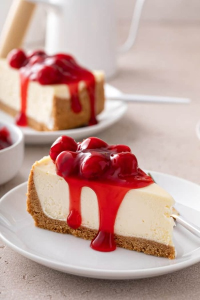
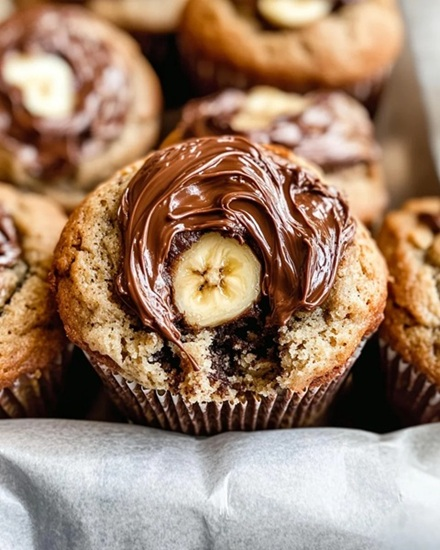

Recipes
Whether you are in the mood for something rich, fruity, or full of chocolate, there is always something sweet to bake. Try one of these delicious recipes for your next baking project!
Classic Cheesecake with Cherry Sauce

Image Source: My Baking Addiction
Ingredients
Graham Cracker Crust
- 1 1/2 cups graham cracker crumbs
- 1/4 cup granulated sugar
- 5 tablespoons unsalted butter, melted
Cheesecake
- Four 8-ounce packages full-fat cream cheese, at room temperature
- 1 cup granulated sugar
- 1 cup full-fat sour cream, at room temperature
- 2 teaspoons fresh lemon juice
- 1 teaspoon vanilla extract
- 3 large eggs, at room temperature
Cherry Sauce
- 1 1/2 tablespoons cornstarch
- 1 1/2 tablespoons water
- 1 tablespoon fresh lemon juice
- 2 1/2 cups pitted sour cherries
- 1/2 cup granulated sugar
- 1/8 teaspoon salt
- 1 teaspoon vanilla extract
Directions
- Preheat the oven to 350°F and prepare the graham cracker crust. Bake the crust for 10 minutes.
- Beat the cream cheese and sugar together until smooth. Add the sour cream, lemon juice, and vanilla.
- Add the eggs and mix just until combined.
- Pour the filling over the crust and bake the cheesecake in a water bath for about 55 to 70 minutes.
- Turn off the oven and allow the cheesecake to cool inside for 1 hour. Remove it from the water bath and allow it to finish cooling.
- Refrigerate the cheesecake for at least 4 hours before serving.
- For the cherry sauce, combine the ingredients in a saucepan and cook until the cherries soften and the sauce thickens. Allow it to cool before adding it to the cheesecake.
Recipe adapted from Sally's Baking 101.
Banana Nutella Muffins

Image Source: Quick Cook Ideas
Ingredients
Hazelnut Streusel Topping
- 1/4 cup finely chopped hazelnuts
- 1/4 cup brown sugar
- 1/2 teaspoon ground cinnamon
Muffins
- 1 2/3 cups all-purpose flour
- 1 teaspoon baking powder
- 1 teaspoon baking soda
- 1 teaspoon ground cinnamon
- 1/2 teaspoon salt
- 1 1/2 cups mashed bananas
- 3/4 cup granulated sugar
- 6 tablespoons unsalted butter, melted
- 1 large egg, at room temperature
- 1 teaspoon vanilla extract
- 1/4 cup buttermilk, at room temperature
- 1/2 cup Nutella
Directions
- Preheat the oven to 425°F and prepare a 12-cup muffin pan.
- Combine the hazelnuts, brown sugar, and cinnamon to make the streusel topping.
- In a separate bowl, whisk together the flour, baking powder, baking soda, cinnamon, and salt.
- Mix the mashed bananas, sugar, melted butter, egg, and vanilla. Add the dry ingredients and buttermilk and mix until combined.
- Fill each muffin cup about halfway with batter. Add a heaping teaspoon of Nutella, then cover with the remaining batter.
- Sprinkle the hazelnut streusel over the muffins.
- Bake for 5 minutes at 425°F. Reduce the oven temperature to 350°F and continue baking for about 19 to 20 minutes.
- Allow the muffins to cool in the pan for about 10 minutes before moving them to a cooling rack.
Recipe adapted from Sally's Baking 101.
Birthday Brookies

Image Source: EMS Foodie Fix
Ingredients
Brownie Batter
- 12 tablespoons unsalted butter, melted and hot
- 3 tablespoons vegetable oil
- 1 1/2 cups granulated sugar
- 2 large eggs, at room temperature
- 1 egg yolk, at room temperature
- 1 1/2 teaspoons vanilla extract
- 1 cup unsweetened Dutch-process cocoa powder
- 3/4 cup all-purpose flour
- 1 tablespoon hot water
- 1/2 teaspoon salt
- 1 1/2 cups semi-sweet chocolate chips
Cookie Dough
- 8 tablespoons unsalted butter, at room temperature
- 1/3 cup brown sugar
- 1/3 cup granulated sugar
- 1 large egg, at room temperature
- 1 teaspoon vanilla extract
- 1/4 teaspoon almond extract (optional)
- 1 1/4 cups all-purpose flour
- 1/2 teaspoon baking powder
- 1/2 teaspoon salt
- 1/2 cup white chocolate chips
- 1/3 cup rainbow sprinkles, plus more for the top
Directions
- Preheat the oven to 350°F and line a 9-by-13-inch metal baking pan with parchment paper.
- Prepare the cookie dough by mixing the butter and sugars, then adding the egg, vanilla, and optional almond extract.
- Add the flour, baking powder, and salt. Mix in the white chocolate chips and rainbow sprinkles.
- For the brownie batter, whisk the hot melted butter, vegetable oil, and sugar together. Allow the mixture to cool for a few minutes.
- Add the eggs, egg yolk, and vanilla. Mix in the cocoa powder, flour, hot water, and salt, then fold in the chocolate chips.
- Spread the brownie batter evenly in the prepared pan.
- Flatten portions of cookie dough and arrange them over the brownie batter. Add extra rainbow sprinkles on top.
- Bake for about 32 to 36 minutes. If the top begins browning too quickly, loosely cover the pan with foil.
- Allow the brookies to cool completely before removing them from the pan and cutting them into bars.
Recipe adapted from Sally's Baking 101.